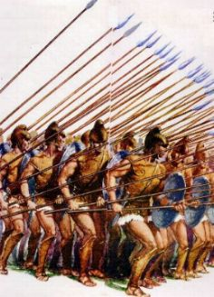
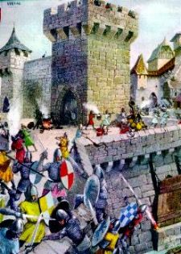
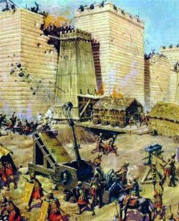

Pilatos mais uma vez,
exagerando em suas atribui��es, mandou massacrar centenas de
samaritanos  no Garizim, monte sagrado da Samaria, por imaginar
que eles tramavam uma revolu��o contra a ocupa��o imperial
romana. Longino e os centuri�es de seu
grupo, que pertenciam �s guarni��es dos oficiais Corn�lius e
Cretus, tinham sido designados a participarem da desprez�vel
miss�o, mas ele n�o foi, por n�o concordar com a natureza
daquele trabalho que classificou de "sujo" e "impopular".
no Garizim, monte sagrado da Samaria, por imaginar
que eles tramavam uma revolu��o contra a ocupa��o imperial
romana. Longino e os centuri�es de seu
grupo, que pertenciam �s guarni��es dos oficiais Corn�lius e
Cretus, tinham sido designados a participarem da desprez�vel
miss�o, mas ele n�o foi, por n�o concordar com a natureza
daquele trabalho que classificou de "sujo" e "impopular".
Em consequ�ncia foi
condenado pelos superiores h� permanecer 30 dias enclausurado,
sem direito a soldo e apenas com uma refei��o e um copo de
�gua por dia.
Preferiu a dr�stica
senten�a a sentir-se com a consci�ncia pesada pelo resto de sua
vida.
Terminado o cativeiro,
tinha emagrecido quase 15 quilos, estava desnutrido e com
problemas renais. Novamente a caridade de Yossef veio em seu
socorro, levando-o para a sua casa.
Por outro lado, ap�s a
matan�a dos samaritanos, a not�cia chegou rapidamente ao Senado
Romano, que, indignado com o fato, ordenou a urgente presen�a de
Pilatos para explicar o seu procedimento e justificar tamb�m
muitas outras acusa��es que haviam contra ele.
Viajou para Roma a fim
de prestar esclarecimentos sobre a sua conduta, mas tantos eram
os seus crimes e desacertos, que n�o conseguiu justificar-se.
Acabou morrendo de forma violenta.
Longino foi
reabilitado... O oficial Corn�lius que tinha grande estima por
ele, fez quest�o de levar pessoalmente a not�cia na casa de
Yossef, onde ele se encontrava em recupera��o.
Na It�lia, com a morte
de Tib�rio C�sar, Cal�gula � proclamado o novo Imperador.
Nesta mesma �poca, um poderoso ex�rcito de b�rbaros, vindos do
Oriente, atacou o Egito pelo porto de Alexandria. Diversas
legi�es romanas foram deslocadas para l�, objetivando refor�ar
o contingente local. E junto, seguiu a guarni��o de
Longino.
Antes da partida,
visitou Yossef e lhe confiou � guarda da "Lan�a
da Paix�o".



Garboso e cheio de
ideal, marchou resoluto ao lado de seus companheiros, conduzindo
o vistoso estandarte da guarni��o, servindo a
p�tria com dedica��o e coragem.
Foram meses de intensos
combates, com dificuldades de toda natureza, devido a valentia e
ferocidade do inimigo, que n�o desanimava e n�o se rendia.
A campanha militar ia
completar dois anos de muita luta quando Longino foi gravemente
ferido. Uma espada otomana atravessou-lhe o peito e amputou o seu
bra�o esquerdo.
Num intervalo da
batalha, enquanto os ex�rcitos refaziam os seus planos e preparavam
nova investida, uma equipe de busca e salvamento, o recolheu quase sem
vida numa po�a de sangue, ao lado de muitos cad�veres.
Levado para a
enfermaria, foi medicado com presteza e habilidade, mas
permaneceu desacordado. Apenas se ouvia a sua respira��o ofegante
e as fracas batidas do cora��o. Recobrou os sentidos lentamente
e permaneceu por tr�s longas semanas ingerindo l�quidos como
alimento. Seu estado era desesperador.
A luta continuou renhida
e com ferocidade, sem pren�ncios de cessa��o dos combates.
Longino quando recobrou
a consci�ncia, teve um choque, pois percebeu que
estava sem o bra�o esquerdo. Estava mutilado. Ele, que fora
um homem �gil com a espada, repleto de coragem em defesa de seus ideais,
dedicado ao cumprimento dos deveres de soldado e possuidor de um grande
senso de responsabilidade na vida militar, ficou desolado, compreendeu
que estava inutilizado para a legi�o. Nunca mais poderia
desfilar ao lado de seus companheiros, com aquela farda que t�o
orgulhosamente vestia. Nunca mais poderia conduzir o vitorioso
estandarte de sua companhia, lutar pelo Imp�rio, para aumentar
a sua gl�ria e seu imenso poder, assim como defend�-lo dos invasores,
ajudar a dilatar os seus imensos territ�rios e manter a ordem em todos
eles, como sempre fez. Por isso chorou, chorou muito, com sofreguid�o e
dolorosamente. Nenhum pensamento o consolava e nenhuma vantagem
poderia substituir o seu desapontamento e a sua tristeza, por n�o
poder continuar cultivando o ideal nacionalista de servir
militarmente ao grandioso Imp�rio Romano. Estava arrasado...
Id�ias terr�veis passavam por sua cabe�a, pois n�o via mais
"gra�a" na vida... Para sua exist�ncia de soldado
tudo tinha acabado naquele maldito combate. Preferiria morrer do
que viver daquele jeito. E por tudo isso, naquele momento n�o
adiantavam conselhos e nem pondera��es. Seu esp�rito estava
intranquilo, nada que fizessem ou falassem, aliviava ou trazia
qualquer lenitivo a sua dor.
O tratamento arrastou-se
por meses, sem que aparentemente ocorresse alguma melhora
animadora. Uma imensa ferida permanecia aberta no peito, exigindo
constantes curativos e muitos cuidados, para n�o haver infec��o.
O seu estado era verdadeiramente desanimador.
O oficial Corn�lius em
todas as oportunidades, estava a seu lado, procurando reanim�-lo e
encoraj�-lo. Entretanto, como dispunham de poucos recursos na
frente de batalha, decidiu mand�-lo de volta � Jerusal�m.
Foi uma viagem dif�cil
devido � poeira do caminho, a falta de repouso, a alimenta��o
deficiente e a utiliza��o de medicamentos em situa��o
desfavor�vel. Chegou quase morto.
E ainda desta vez, a
grande amizade de Yossef veio em seu aux�lio. Sabendo do
ocorrido, tratou de lev�-lo para a sua casa e propiciar-lhe os
tratamentos e a aten��o necess�ria.
Instalado na casa
de Yossef, chovia muito naquele dia. Os dois estavam sozinhos
no quarto. Longino, quieto e taciturno. 0 amigo procurava anim�-lo
dizendo-lhe not�cias sobre os Disc�pulos de JESUS, sobre as comunidades
crist�s que cresciam de maneira not�vel. Ele apenas ouvia e
permanecia em sil�ncio. Yossef insistiu falando-lhe sobre o
"�gape", as celebra��es lit�rgicas e as
"missas" presididas principalmente por Pedro, Andr� e
Jo�o, n�o se esquecendo de mencionar os muitos milagres que
aconteciam pela vontade de DEUS NOSSO SENHOR.
Mas Longino permanecia calado,
o seu pensamento estava distante. Na sua mente se desenrolava
o filme daquela miss�o no Calv�rio. Olhou para a sua m�o e viu que
a mancha remanescente do sangue de JESUS havia desaparecido totalmente!
Um arrepio de satisfa��o reanimou-lhe o esp�rito, ao mesmo tempo
em que uma confortadora id�ia dominou o seu racioc�nio,
fazendo crescer vigorosamente uma esperan�a
em seu cora��o.
Segurando o bra�o de
Yossef, pediu:
- Amigo, por favor,
traga-me a Lan�a.
A ferida em seu peito
era muito grande e do�a bastante com qualquer movimento. Sua
respira��o n�o era normal e, sempre que se emocionava,
provocava um acesso de tosse que a fazia sangrar.
Yossef voltou trazendo
cuidadosamente a Lan�a e a acomodou na cama, ao lado do bra�o
direito  de Longino. O centuri�o vagarosamente virou a m�o e
a segurou com decis�o. Subitamente sentiu um estimulante tremor
percorrer o seu corpo, aquecendo a sua m�o e sua face, como se
a circula��o sangu�nea tivesse aumentado ou como se ele tivesse
se aproximado do calor ardente de uma fornalha. Na fronte, o
suor brotava e escorria pelo rosto, enquanto nas pernas
e nos p�s, uma poderosa sensa��o agrad�vel os envolvia e
confortava. Sua alma ficou atenta, em suspense, prenunciando que
algum acontecimento not�vel estava para ocorrer. No peito, e
mais precisamente no local da ferida, a temperatura elevou-se
consideravelmente, aquecendo de modo impressionante toda a
regi�o peitoral, como se ela estivesse sendo cauterizada por um
ferro em brasa. E na verdade, em poucos segundos a imensa chaga
fechou-se. Estava completamente curado.
de Longino. O centuri�o vagarosamente virou a m�o e
a segurou com decis�o. Subitamente sentiu um estimulante tremor
percorrer o seu corpo, aquecendo a sua m�o e sua face, como se
a circula��o sangu�nea tivesse aumentado ou como se ele tivesse
se aproximado do calor ardente de uma fornalha. Na fronte, o
suor brotava e escorria pelo rosto, enquanto nas pernas
e nos p�s, uma poderosa sensa��o agrad�vel os envolvia e
confortava. Sua alma ficou atenta, em suspense, prenunciando que
algum acontecimento not�vel estava para ocorrer. No peito, e
mais precisamente no local da ferida, a temperatura elevou-se
consideravelmente, aquecendo de modo impressionante toda a
regi�o peitoral, como se ela estivesse sendo cauterizada por um
ferro em brasa. E na verdade, em poucos segundos a imensa chaga
fechou-se. Estava completamente curado.
DEUS NOSSO SENHOR
manifestou visivelmente a Sua infinita e misericordiosa bondade, cicatrizando
milagrosamente a ferida no peito de Longino, curando-o
instantaneamente.
De um salto, pulou da
cama e vibrou de alegria e de emo��o, feliz pelo milagre que
acabava de acontecer pela paternal compaix�o do
SENHOR. Abra�ado ao amigo, agradecia a DEUS sem cessar, enquanto
as l�grimas desciam de seus olhos e se espalhavam pela face
sorridente, que dava expans�o e demonstrava o seu imenso e
indescrit�vel j�bilo.

Sem o bra�o esquerdo,
Longino foi oficialmente afastado da Legi�o Pretoriana, passando
a receber um soldo beneficente, em paga de seus eficientes anos
de servi�o.

Pr�xima P�gina

 P�gina
Anterior
P�gina
Anterior
Retorna
ao �ndice